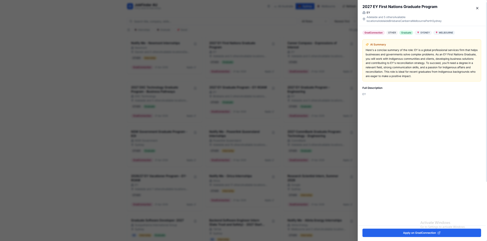
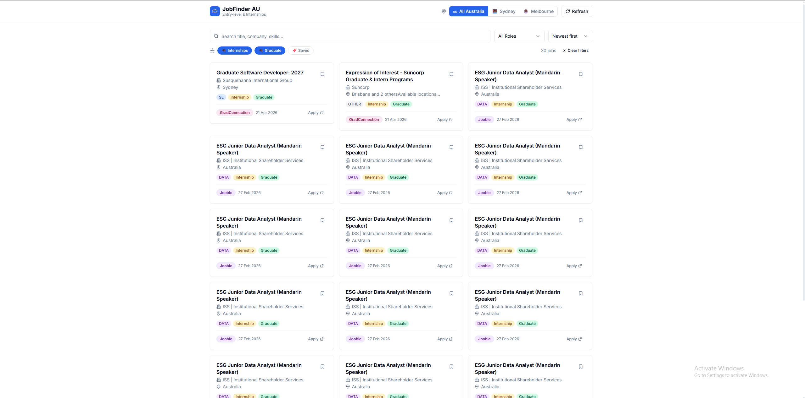
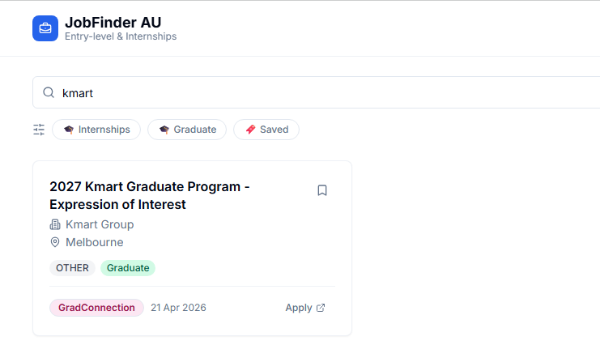
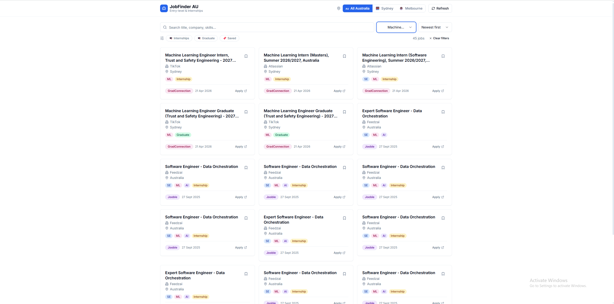

← Back to portfolio
Job Finder
A job aggregation system for entry-level and internship tech roles in Sydney and Melbourne. Pulls from 10 sources (Adzuna, Jooble, Greenhouse, Seek, Wellfound, and more), generates AI summaries for each listing, deduplicates across sources, and re-scrapes automatically on a schedule.




